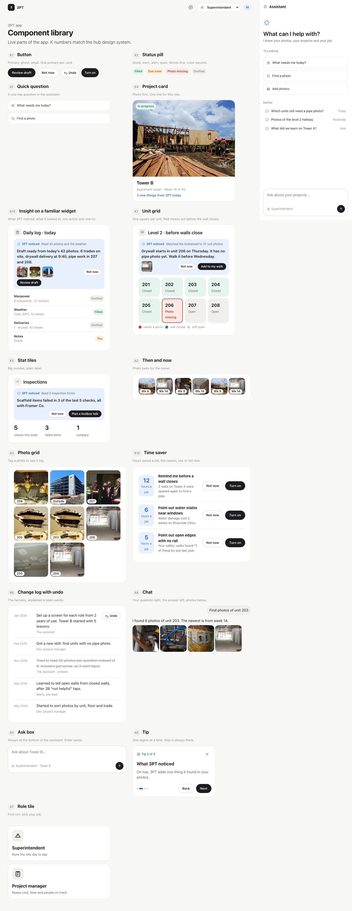

Decide · hot · component library · captured from the app
Every part of the app, rendered by the same code the screens use. K numbers match the design system.
DERIVED Screenshot of ui/apps/web route #/components, desktop 1440 px. Refresh with pnpm --filter @3pt/web library && pnpm --filter @3pt/web library:hub, then convert to JPEG.
